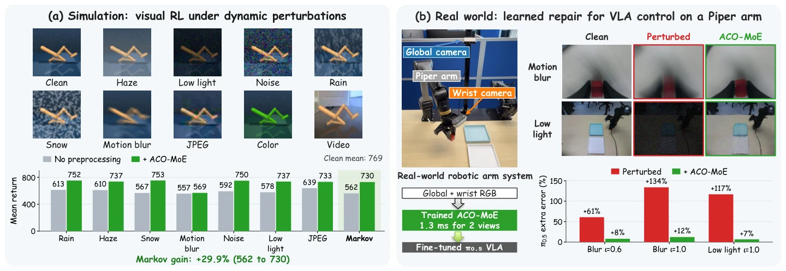
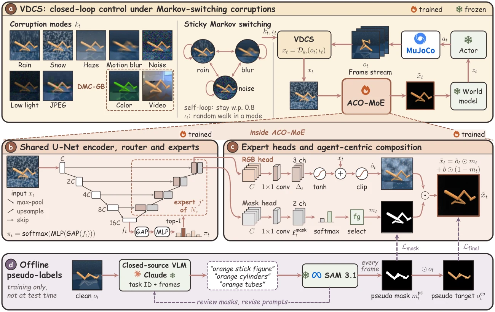
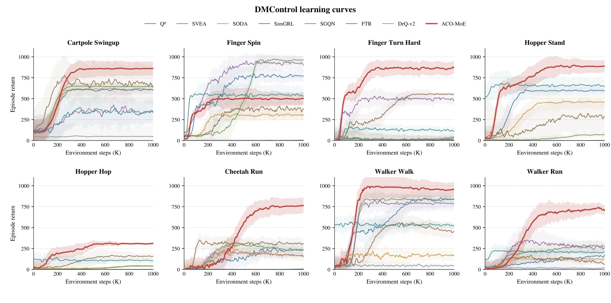
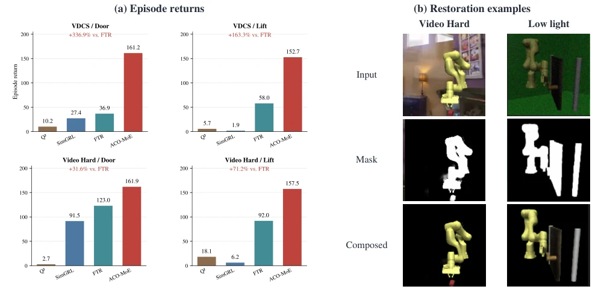

Seven switching degradations
VDCS changes the type and severity of image degradation within an episode to measure how well visual control holds up over time.
Robust visual control
for robust visual control under dynamic perturbations
1 The Hong Kong University of Science and Technology2 City University of Hong Kong3 University of Zurich4 Tsinghua University
* Equal contribution. Most of this work was completed at City University of Hong Kong.

VDCS changes the type and severity of image degradation within an episode to measure how well visual control holds up over time.
ACO-MoE routes each frame to restoration experts and composes repaired RGB with a predicted task foreground.
The learned repair network restores camera observations for visual RL in simulation and a fine-tuned π₀.₅ policy on the physical arm.
Method

Visual Degraded Control Suite
A sticky Markov chain switches among seven image degradations during an episode. Each mode has a base severity, and a random walk varies its strength over time.
Examples from the paper. Listed values are the benchmark’s base severities.
Simulation
DreamerV3 mean return across eight VDCS tasks under Markov switching.
Under six unseen perturbation families, ACO-MoE retains about 70%–97% of the clean mean return.
Episode return over one million environment steps under Markov switching.

Returns under VDCS Markov switching and Video Hard, with examples of the corrupted input, predicted mask, and composed observation.

Real robot
Piper with a fine-tuned π₀.₅ policy. Each pair shows two recorded trials for the selected task and perturbation.
Without restoration → with ACO-MoE · Experiment protocol and full results
Continuous recording
At blur severity 0.8, task-weighted ACO-MoE completes 19 of 20 cup trials. The unrestored policy completes 0 of 10.
Citation
@misc{fang2026agentcentricobservationadaptationrobust,
title={Agent-Centric Observation Adaptation for Robust Visual Control under Dynamic Perturbations},
author={Zhengru Fang and Yu Guo and Huanhuan Lou and Fei Liu and Yuang Zhang and Yihang Tao and Senkang Hu and Wenbo Ding and Yuguang Fang},
year={2026},
eprint={2604.24661},
archivePrefix={arXiv},
primaryClass={cs.RO},
url={https://arxiv.org/abs/2604.24661},
}